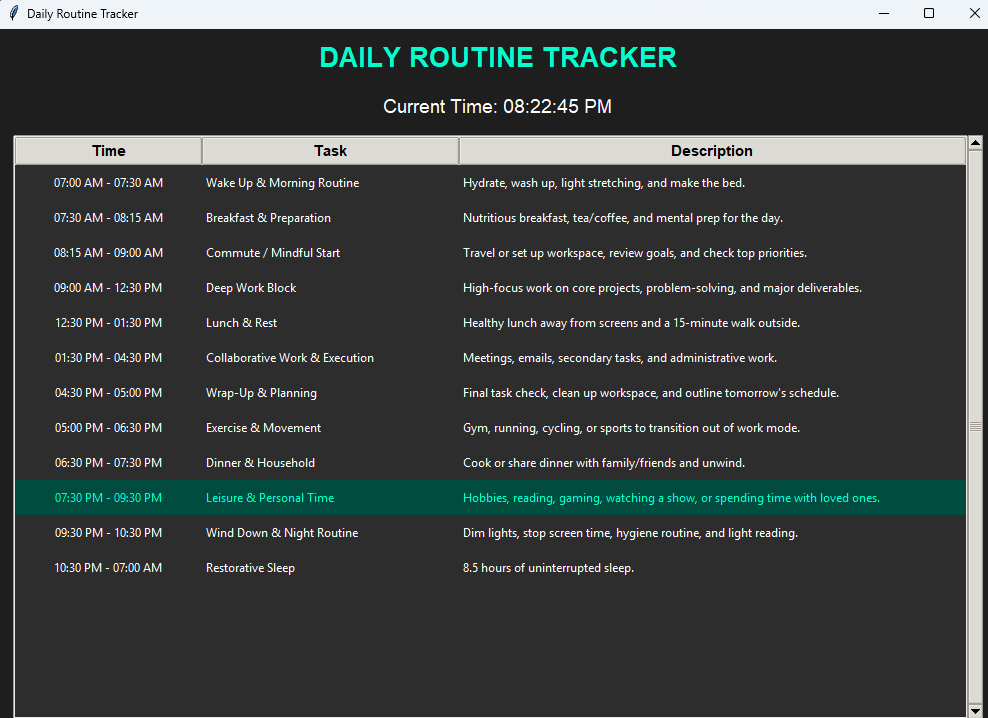

Item 002
Daily Routine Tracker
The Daily Routine Tracker is a desktop productivity tool designed to organize the day into a clear structure of work, rest, study, and review.
Built in Python using Tkinter, it displays a time-based routine, highlights the active block, and supports reminders for schedule changes. It is useful for students, creators, and anyone who wants a consistent daily rhythm.
The project is especially helpful for time discipline, as it gives a readable schedule with current task awareness and notification support.
Visuals

Python Code
import tkinter as tk
from tkinter import ttk
from datetime import datetime
from plyer import notification
# =========================
# DAILY SCHEDULE
# =========================
schedule = [
("07:00", "07:30", "Wake Up & Morning Routine",
"Hydrate, wash up, light stretching, and make the bed."),
("07:30", "08:15", "Breakfast & Preparation",
"Nutritious breakfast, tea/coffee, and mental prep for the day."),
("08:15", "09:00", "Commute / Mindful Start",
"Travel or set up workspace, review goals, and check top priorities."),
("09:00", "12:30", "Deep Work Block",
"High-focus work on core projects, problem-solving, and major deliverables."),
("12:30", "13:30", "Lunch & Rest",
"Healthy lunch away from screens and a 15-minute walk outside."),
("13:30", "16:30", "Collaborative Work & Execution",
"Meetings, emails, secondary tasks, and administrative work."),
("16:30", "17:00", "Wrap-Up & Planning",
"Final task check, clean up workspace, and outline tomorrow's schedule."),
("17:00", "18:30", "Exercise & Movement",
"Gym, running, cycling, or sports to transition out of work mode."),
("18:30", "19:30", "Dinner & Household",
"Cook or share dinner with family/friends and unwind."),
("19:30", "21:30", "Leisure & Personal Time",
"Hobbies, reading, gaming, watching a show, or spending time with loved ones."),
("21:30", "22:30", "Wind Down & Night Routine",
"Dim lights, stop screen time, hygiene routine, and light reading."),
("22:30", "07:00", "Restorative Sleep",
"8.5 hours of uninterrupted sleep.")
]
# =========================
# TIME CONVERTER
# =========================
def time_to_12hr(time_str):
h, m = map(int, time_str.split(":"))
period = "AM" if h < 12 else "PM"
h = h % 12
if h == 0:
h = 12
return f"{h:02d}:{m:02d} {period}"
# =========================
# APP
# =========================
class RoutineApp:
def __init__(self):
self.root = tk.Tk()
self.root.title("Daily Routine Tracker")
self.root.geometry("1000x700")
self.root.configure(bg="#1e1e1e")
self.full_data = {}
self.last_notified_task = None
title = tk.Label(
self.root,
text="DAILY ROUTINE TRACKER",
font=("Helvetica", 20, "bold"),
fg="#00ffcc",
bg="#1e1e1e"
)
title.pack(pady=10)
self.time_label = tk.Label(
self.root,
text="",
font=("Helvetica", 14),
fg="white",
bg="#1e1e1e"
)
self.time_label.pack(pady=5)
frame = tk.Frame(self.root, bg="#1e1e1e")
frame.pack(fill="both", expand=True, padx=15, pady=10)
columns = ("Time", "Task", "Description")
self.tree = ttk.Treeview(
frame,
columns=columns,
show="headings"
)
self.tree.heading("Time", text="Time")
self.tree.heading("Task", text="Task")
self.tree.heading("Description", text="Description")
self.tree.column("Time", width=180, anchor="center")
self.tree.column("Task", width=250)
self.tree.column("Description", width=500)
scrollbar_y = ttk.Scrollbar(
frame,
orient="vertical",
command=self.tree.yview
)
self.tree.configure(
yscrollcommand=scrollbar_y.set
)
self.tree.pack(side="left", fill="both", expand=True)
scrollbar_y.pack(side="right", fill="y")
style = ttk.Style()
style.theme_use("clam")
style.configure(
"Treeview",
background="#2d2d2d",
foreground="white",
fieldbackground="#2d2d2d",
rowheight=35
)
style.configure(
"Treeview.Heading",
font=("Helvetica", 11, "bold")
)
self.tree.tag_configure(
"current",
background="#004d40",
foreground="#00ffcc"
)
self.tree.bind(
"",
self.show_full_description
)
self.load_schedule()
self.update_time()
self.root.mainloop()
# =========================
# LOAD SCHEDULE
# =========================
def load_schedule(self):
self.tree.delete(*self.tree.get_children())
self.full_data.clear()
now = datetime.now()
current_min = now.hour * 60 + now.minute
for start, end, task, desc in schedule:
start_min = (
int(start.split(":")[0]) * 60 +
int(start.split(":")[1])
)
end_min = (
int(end.split(":")[0]) * 60 +
int(end.split(":")[1])
)
if end_min < start_min:
end_min += 1440
active = (
start_min <= current_min < end_min
or
(
end_min > 1440
and current_min < end_min - 1440
)
)
tags = ("current",) if active else ()
item_id = self.tree.insert(
"",
"end",
values=(
f"{time_to_12hr(start)} - {time_to_12hr(end)}",
task,
desc
),
tags=tags
)
self.full_data[item_id] = {
"task": task,
"desc": desc
}
# =========================
# POPUP DETAILS
# =========================
def show_full_description(self, event):
selected = self.tree.selection()
if not selected:
return
item = selected[0]
data = self.full_data[item]
popup = tk.Toplevel(self.root)
popup.title(data["task"])
popup.geometry("500x300")
popup.configure(bg="#2d2d2d")
title = tk.Label(
popup,
text=data["task"],
font=("Helvetica", 14, "bold"),
fg="#00ffcc",
bg="#2d2d2d"
)
title.pack(pady=10)
text = tk.Text(
popup,
wrap="word",
bg="#1e1e1e",
fg="white",
font=("Consolas", 11)
)
text.insert("1.0", data["desc"])
text.config(state="disabled")
text.pack(
fill="both",
expand=True,
padx=15,
pady=10
)
# =========================
# NOTIFICATIONS
# =========================
def check_notifications(self):
now = datetime.now()
current_time = now.strftime("%H:%M")
for start, end, task, desc in schedule:
if current_time == start:
if self.last_notified_task != task:
notification.notify(
title="Routine Reminder",
message=f"{task}\n\n{desc}",
timeout=10
)
self.last_notified_task = task
# =========================
# CLOCK UPDATE
# =========================
def update_time(self):
self.time_label.config(
text="Current Time: "
+ datetime.now().strftime("%I:%M:%S %p")
)
self.load_schedule()
self.check_notifications()
self.root.after(
1000,
self.update_time
)
# =========================
# START APP
# =========================
if __name__ == "__main__":
RoutineApp()